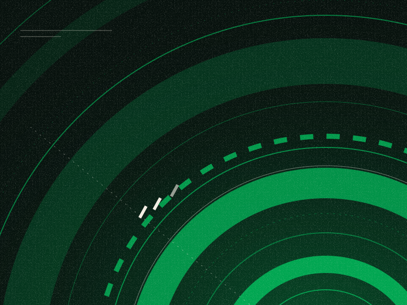
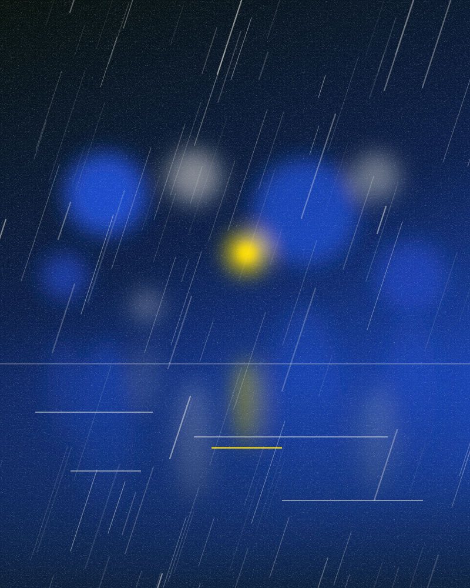
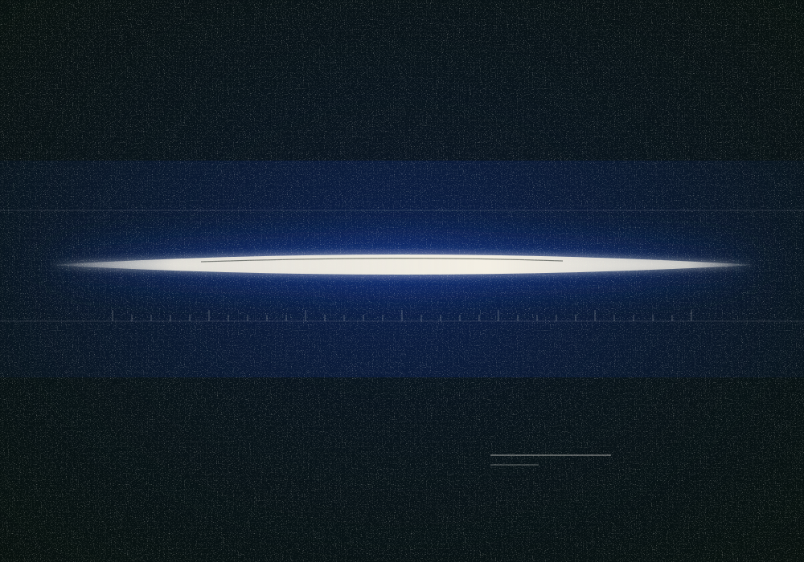
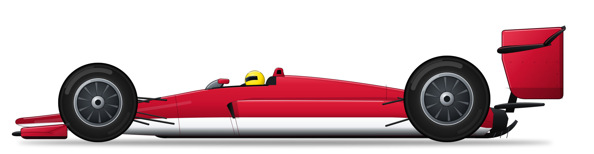
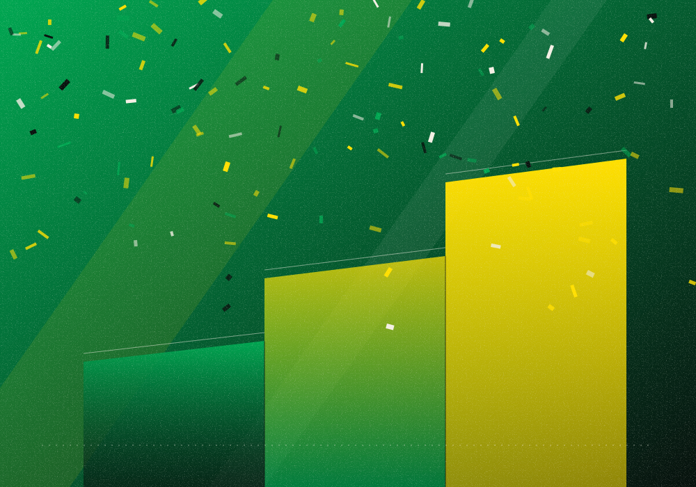
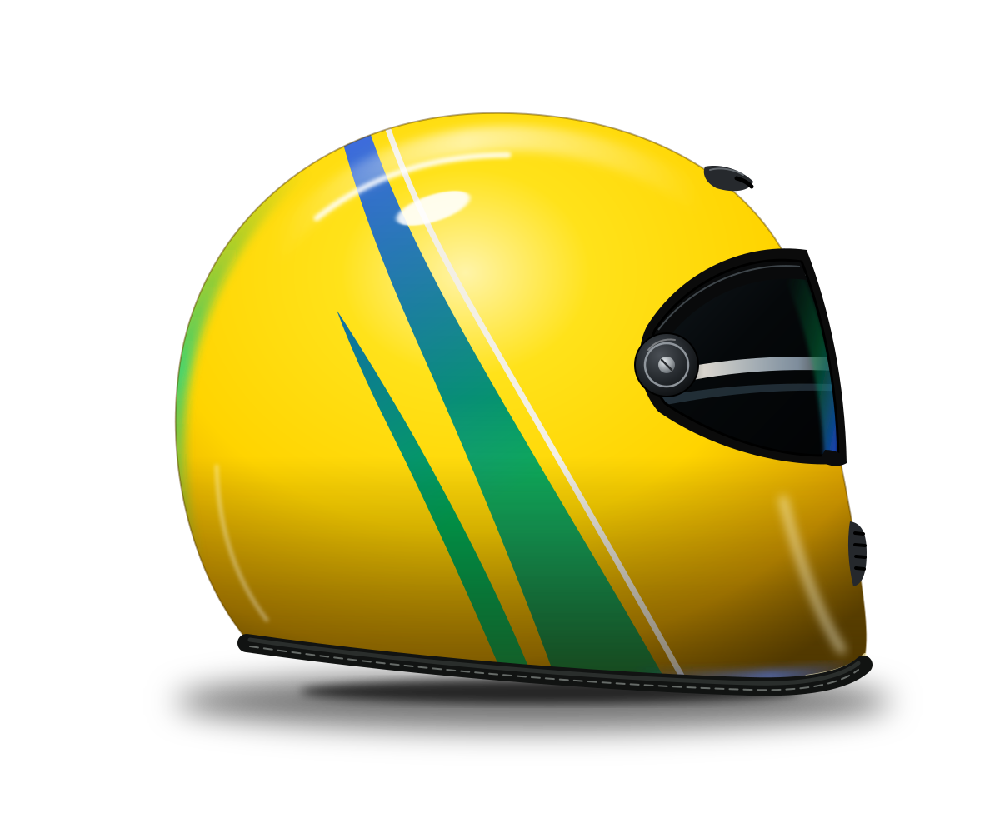

Ten seasons.
161 starts.
Formula 1 from 1984 to 1994, with four teams and one fixed idea: the lap could always be faster.
Formula 1 from 1984 to 1994, with four teams and one fixed idea: the lap could always be faster.
Sixty-five pole positions from 161 starts — a record that stood until 2006.
World Champion in 1988, 1990 and 1991. In Brazil, simply Ayrton.
Born in São Paulo on 21 March 1960, he was racing karts at thirteen. He crossed the Atlantic to win in Formula Ford, took the British Formula 3 title in 1983, and reached Formula 1 a year later. Over ten seasons he turned qualifying into an art form and made wet races his own.



Where others
lifted, he went.
The first came in torrential rain in Portugal, more than a minute clear of second place. The last: Adelaide, 1993.
Pole by 1.427 seconds — over his own team-mate, in the same car. The 65th and last: Imola, 1994.
All three were settled at the same Japanese circuit.
Second place in a Toleman, in the rain, in his rookie year.
The first at his home Grand Prix with Toleman; the last on 1 May 1994.
Hold to drive a lap of five of his greatest races. Take the wheel ↓
One win with Lotus, then five in a row. Still the record.
Hover or tap a number for the moment behind it
Keep scrolling→
Car colours · white
A small team and a first season that announced him. Three podiums in a car that had no business near the front — Monaco, Brands Hatch and Estoril — and ninth in the championship.
Car colours · black & gold 1985–86
Car colours · yellow 1987
The first pole and the first win came on the same weekend, in the rain at Estoril in April 1985. Sixteen poles in three years made him the benchmark over a single lap.

Car colours · red & white
The defining years. Thirty-five of his forty-one victories, forty-six poles and all three World Championships — much of it fought against Alain Prost, first as team-mates, then as rivals across the garage wall.


Car colours · dark blue & white
A new team and a difficult car. He started all three races of 1994 from pole position — Interlagos, Aida and Imola.
Wins Poles Champion

Eight wins and thirteen poles from sixteen races. The title was settled at Suzuka: he stalled on the grid, dropped to fourteenth, and still won.
Six wins and ten poles. It ended at Suzuka's first corner, in a collision with Prost that people still argue about today.
Four straight wins to open the season, seven in all — including, at last, his home Grand Prix. Champion for the third time, again at Suzuka.
One lap.
Nothing held back.
Six victories on the streets of the principality — still the record — five of them in a row.
Tap a yearPole by 1.427s over his own team-mate in 1988 — then a crash from the lead.
Thirteenth on the grid in a downpour, in his first season. He climbed to second and was catching the leader hand over fist when the race was stopped. A first podium, and notice served.
First pole on Saturday, first win on Sunday. In rain so heavy that others spun on the straights, he finished more than a minute clear and lapped every car but one.
The engine stalled as the lights changed. The slope of the grid got him rolling; fourteenth at the first corner became first by lap twenty-eight, and with it a first World Championship.
His eighth attempt at winning at home. With the gearbox failing he drove the final laps stuck in sixth gear as the rain came, held on to win, and had to be helped from the car.
Fourth on the grid, fifth into the first corner, first by the end of the opening lap. On a day of changing weather he won the European Grand Prix by well over a minute.
Scroll to
drive it.
Months after Imola, his family founded the Instituto Ayrton Senna — an idea he had discussed with his sister Viviane, who has led it since 1994.
The Institute works with public schools across Brazil on literacy, teacher training and the wider development of children and young people. Its 2023 annual report counts more than 36 million reached in 29 years.
Instituto Ayrton Senna↗